SANA AİT BİR ÖĞRENME YOLUBir sonraki adımın
Bir sonraki adımın
hep belli.
Kendi seviyenden başla. Küçük derslerle ilerle, yeni konuların kapısını aç. İngilizceyi adım adım hayatına kat.
A1A2B1…
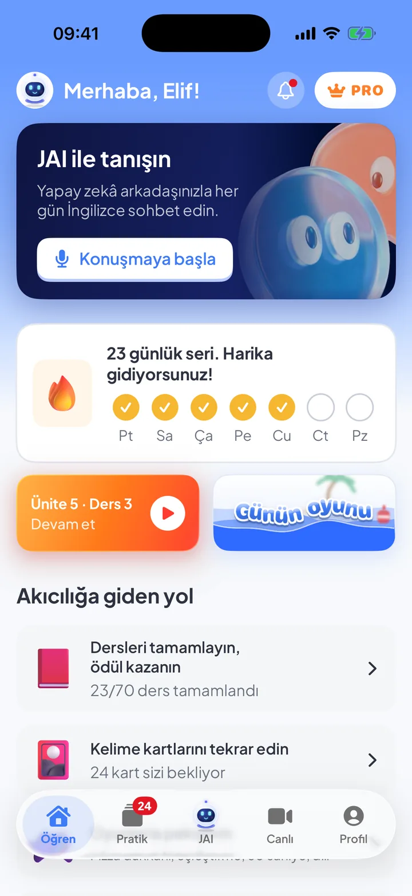
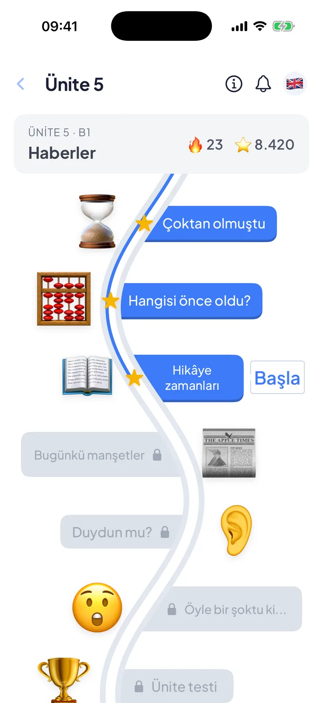
JAI ile konuş. Oyunlarla pratik yap. Kendi seviyenden başla, her gün bir adım ilerle. İngilizce, artık gününün bir parçası.
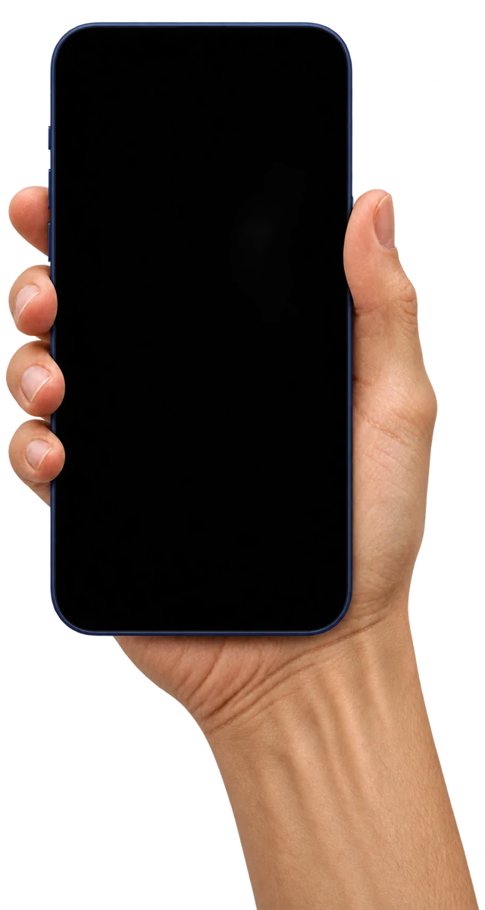
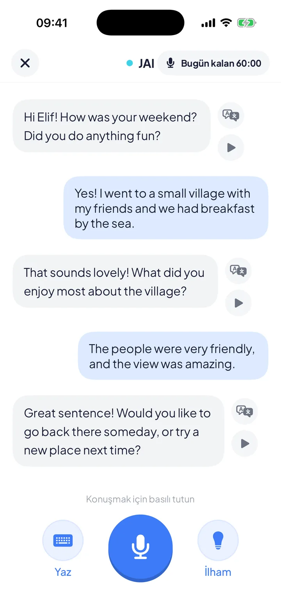
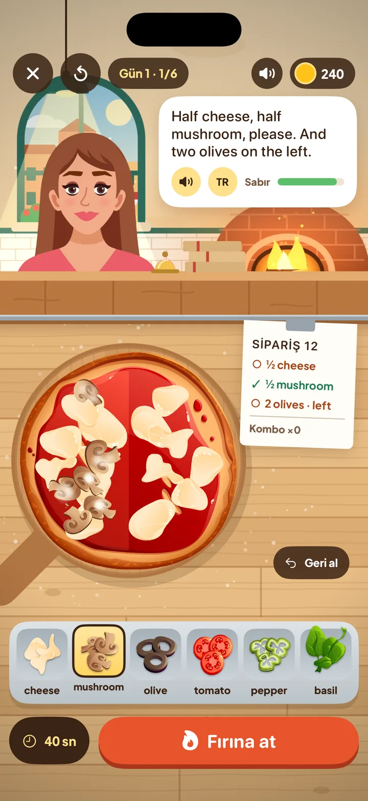
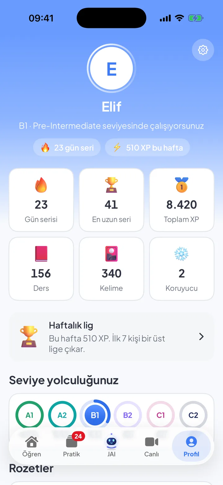
Bir ders, küçük bir oyun, gerçek bir sohbet. heyJengo öğrenmeyi gününe sığdırır; sen de her seferinde bir adım daha ileri gidersin.
Kendi seviyenden başla. Küçük derslerle ilerle, yeni konuların kapısını aç. İngilizceyi adım adım hayatına kat.


Kelime kartları, örnek cümleler ve aralıklı tekrar. İhtiyacın olan kelime, tam zamanında aklına gelsin.
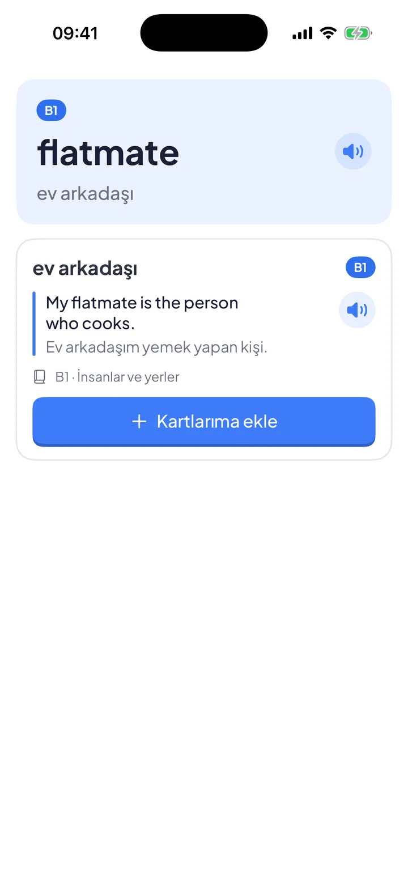
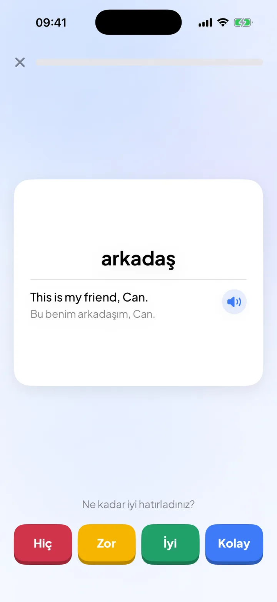
Dinleme alıştırmalarıyla İngilizcenin ritmini yakala. Her yeni ses, kendine güvenmek için bir neden.
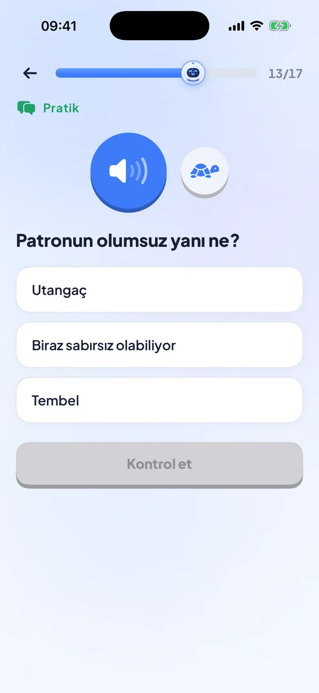
JAI ile İngilizceyi sesli ya da yazılı pratik et. Gününden bahset, bir yolculuğa hazırlan veya sadece sohbet et.
Kusursuz cümleyi bekleme.
İlk cümleyle başla.
Pizza siparişi al, kelimeleri eşleştir, bir gizemi çöz. Her oyun, öğrendiklerini kullanmak için yeni bir fırsat.
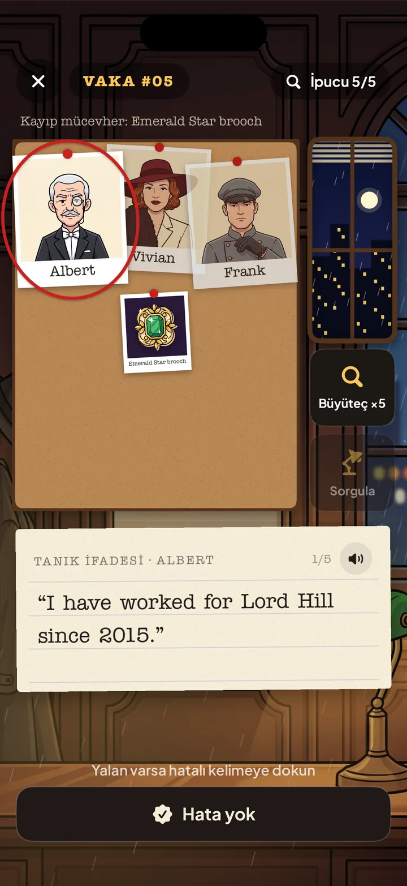
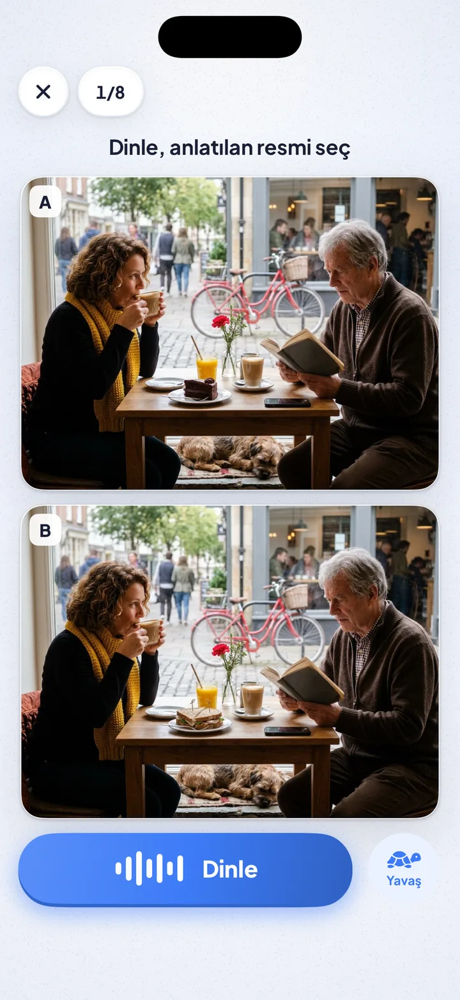
Bir turla başla.
Bir sonraki tur kendiliğinden gelir.
Bir cevap seç ve dene.
Nereden başladığını gör. Geldiğin yeri fark et.
Her küçük adımın bir karşılığı var.
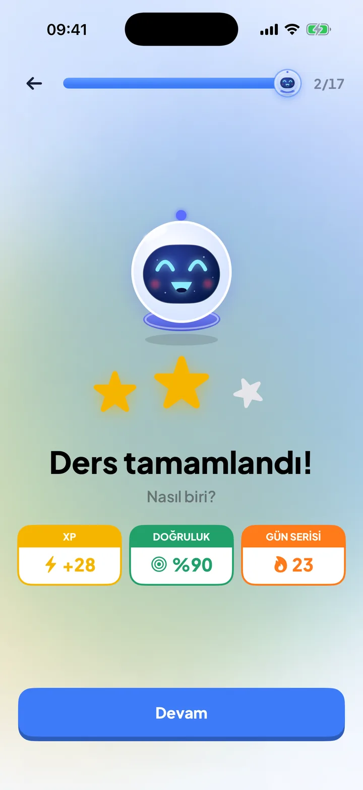
Mükemmel olmak zorunda değilsin.
Devam etmen yeter.
Seviyene uygun İngilizce derslerinde ilerleyebilir, JAI ile sesli veya yazılı pratik yapabilir, kelime kartlarını tekrar edebilir ve oyunlarla öğrendiklerini pekiştirebilirsin.
heyJengo’da A1’den C2’ye seviyeler bulunur. Seviye tespitiyle başlayabilir ve kendi seviyene uygun ders yolunda ilerleyebilirsin.
JAI ile sesli veya yazılı İngilizce sohbet edebilirsin. Gündelik hayat, seyahat ve iş hayatı gibi konular üzerinden pratik yapabilirsin.
Bu sayfa heyJengo için hazırlanan ilk web tasarım seçeneğidir. Örnek konuşma ve kelime oyunu burada denenebilir. Telefon mockuplarının içinde heyJengo uygulamasının gerçek ekran görüntüleri yer alır. Çevrelerindeki yaratıcı sahneler bu tasarım için üretilmiştir.
SIRADAKİ ADIM SENİN
Yeni bir kelime. Küçük bir oyun. Kendine güvenerek kurduğun ilk cümle. İngilizceyi hayatına katmanın bir sürü yolu var.